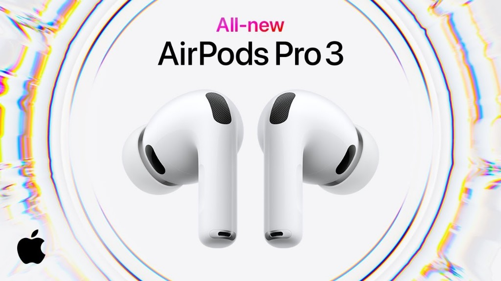

Descripción
Los AirPods Pro 3 son los auriculares in-ear premium de Apple: diseño liviano, sellado ajustable con puntas de silicona y chip para audio espacial y cancelación de ruido avanzada. Incluyen estuche de carga compatible con carga inalámbrica y conector USB-C.
Características
- Cancelación activa de ruido y modo Transparencia adaptativos.
- Chip de audio de Apple: baja latencia y emparejamiento rápido con iPhone, iPad y Mac.
- Batería: varias horas de reproducción; más carga en el estuche (valores según uso y volumen).
- Resistencia al agua y al sudor (IP54) para uso diario y entrenamiento.
- Controles por tacto en la varilla y audio espacial con seguimiento dinámico de la cabeza.
Beneficios
Ideales para trabajar con foco, viajar con menos ruido de fondo o escuchar música con buena definición. El estuche es compacto y fácil de llevar; el emparejamiento con el ecosistema Apple es inmediato si ya usás iCloud en tus dispositivos.
